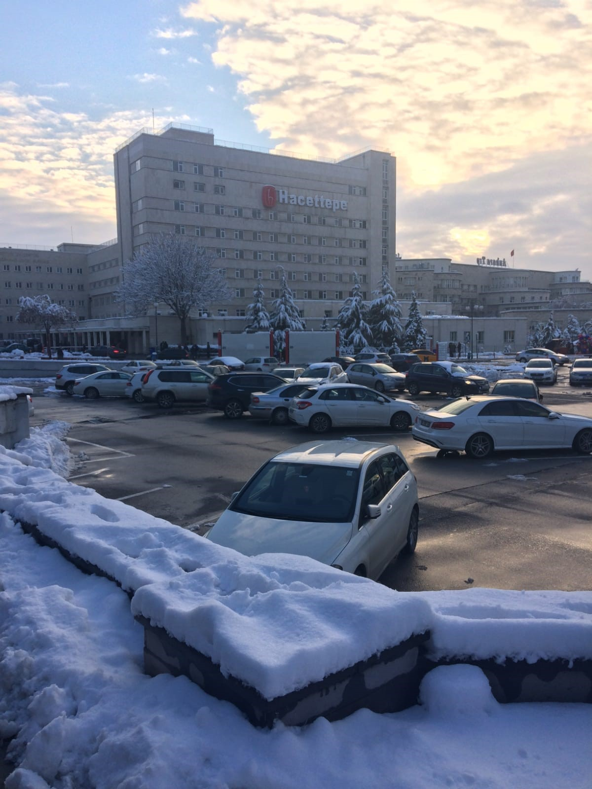

Hacettepe University
General Information
Hacettepe University was established in 1967. Education languages are Turkish, English, German and French. The most successful students of Turkey, from health to engineering, from law to economics and administrative sciences, from literature to education, prefer Hacettepe. The best 10 universities in Turkey every year by the university national and international evaluation centers; It is among the top 500 universities in the world.
Campus
When you think of Hacettepe, the first campus that comes to mind is Beytepe. Engineering, Law, Economics and Administrative Sciences, Science and Literature, Communication, Physical Education, Fine Arts, Education Faculties are located in Beytepe. Beytepe is 14 km away from the city center. Beytepe is the most crowded and greenest campus of the university.Health-related departments are located on the Sıhhiye Campus. Medicine, Dentistry, Pharmacy, Nursing Faculties are located in Sıhhiye Campus. Since the Sıhhiye Campus is located in the city center, there is no transportation problem. You can reach in a short time by using metro, bus and minibus. Although the campus is called Sıhhiye, it is closer to Kurtuluş metro station (Ankaray). The library is also open 24/7 on the Sıhhiye campus.
Accommodation
With a total capacity of 2357 rooms in the student dormitories operated by the Department of Health Culture and Sports within university, housing services are provided to 4159 students in Beytepe Campus and 1565 students in Sıhhiye Campus. There are canteens in dormitories that sell to meet the basic needs of students.
Transportation
We can say that the only disadvantage of Beytepe is transportation. Students coming from the city center get off at the Beytepe stop on the subway, and you can reach the ring stop by walking for 5 minutes. You can reach the campus with the free rides by transferring.Hitchhiking culture is quite common in Beytepe. There is a hitchhiking area on campus.
Address
Sihhiye Campus: Hacettepe Mh. 06230 Ankara Türkiye Beytepe Campus: Üniversiteler, Hacettepe Beytepe Kampüsü 35 C, 06800 Çankaya/Ankara